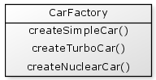
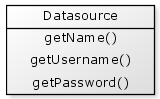
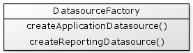
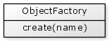
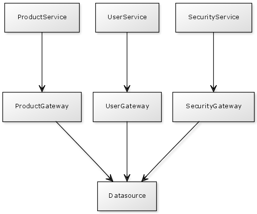

An object factory is a special kind of object that knows how to create other objects. In particular it is useful for creating objects that need to be "assembled together", in particular when using dependency injection. Let's take a look in more detail at object factories and how your might write one youself.
In CFML there are two common techniques for assembling objects together at creation. Suppose we have a Car object that needs an Engine object to help it function:
{% highlight cfm %}The first technique to assemble these together is to provide the engine object to the car as a parameter to the init() function.
{% highlight cfm %}The second technique provides the engine object to the car using a setter function:
{% highlight cfm %}Assembling objects in this way is referred to as dependency injection.
However if you needed to create many cars throughout your application it will become difficult to maintain if you needed three lines of code in every place cars needed to be created. Instead we can move this code into a separate factory object whose only purpose is to create objects.
An object factory has the single responsible of creating other objects. They provide a benefit in hiding how your objects are constructured, and they may also hide the location of where objects are physically located on disk. This allows you to freely change the way the objects are assembled as well as reorganise the directory structure of your components without affecting the rest of you application code.
Before we discuss how a factory might be implemented, let's discuss the two kinds of objects we may be creating.
1) Singleton objects, and
2) Transient objects
A singleton is loosely defined as an object that only has a single instance in your application. It is created only once (usually when the application starts up) and is then shared by any objects that need it. Singletons typically exist for the entire duration of an application and are usually placed in the application scope. An example of a singleton might be a component that contains all of the settings for an application. You would create a single "ApplicationSettings" object when the application first starts up and that single object would then be shared across your entire application.
Transient objects, on the other hand, may have many instances in an application. They are typically created, used, and then discarded at the end of a page request. An example of a transient may be a "ProductForm" object. Suppose you are editing a product's details within your applications administration area. When saving a product's details you may create a ProductForm object temporarily to assist in validating and saving a product's details. This ProductForm object would be "thrown away" once the validation or save was completed, but it would be created again when the next product is edited.
Let's discuss how you might implement a simple transient object factory. In other words, this is a factory that will create the same kinds of objects over and over again. For our example, let's implement a CarFactory that can create a few different types of Cars.

Our CarFactory may be implemented as follows:
{% highlight cfm %}To use our car factory we may write code such as:
{% highlight cfm %}So in this example, our transient object factory has a separate function for each kind of object it creates.
A singleton object factory create objects but ensures that they are only ever created once within an application.
For this example, let's assume that you have an application that needs to retrieve data from two different databases. It is useful to create a separate "Datasource" object for each database:

Datasource objects only need to be created once when the application is first started, so they are good candidates for singleton objects.
Let's create a DatasourceFactory that provides us with our two different datasource objects. Let's assume that one database is used for the main application, the other database is specifically for providing reporting data.

For our singleton implementation we need to ensure that each datasource is only created once:
{% highlight cfm %}We can see here that the datasource objects are created when the DatasourceFactory is first created.
To use our DatasourceFactory we would have code such as:
{% highlight cfm %}Any subsequent calls to the createReportingDatasource() would return the original instance of the reporting datasource.
A transient object factory always creates new objects every time one of its functions is called. A singleton object factory only creates the objects once and continues reusing them over and over again.
So far we have discussed object factories that have a separate function for each type of object they create. These types of factories are useful when creating small sets of related objects, such as our CarFactory which created cars and our DatasourceFactory that created data sources. However, it is often useful to have one larger factory that is used as a central point to create all (or most) of your objects. When you have a factory that can create a wide variety of different kinds of objects, having a separate function for each object type can become unmanageable. So rather than having a separate function for each kind of object, we can create a generic object factory has a single function such as create().

In a generic object factory we provide a unique name for each type of object we want to create. For example to use our generic factory we may write:
{% highlight cfm %}In this example, we are creating some "Service" objects that provide functionality for different parts of an application.
Let's take a look at how you might start implementing a simple generic object factory for singleton objects.
For this example, our factory will create a UserService object, a ProductService object and a SecurityService object. Each of these objects provides high level functions relating to Users, Products and Security accordingly.
Each of these "Service" objects will need to interact with a database. A "gateway" is a common name given to objects that interact directly with a database (and contain SQL for an application), so we will also create a UserGateway, a ProductGateway and a SecurityGateway accordingly.
Each of these "Gateways" needs to directly access the database, so they will require the use of a "Datasource" object.
Let's create a UML diagram that describes these objects and their relationships.

The objects joined by a line with an arrow represents an "association" between objects. The ProductService is associated with the ProductGateway, and the ProductGateway is associated with the Datasource, etc.
Don't worry too much about what each of these objects are for the moment, the key here is to understand that each Service object needs the help of several other objects, and this factory just demonstrates a technique for assembling them together.
To create our UserService, we may have code such as:
{% highlight cfm %}We would use a similar technique for each of the service objects. Now, let's look at how this might be implemented in an object factory.
{% highlight cfm %}You'll notice that when we create our object factory and call the init() function it immediately creates all of the singleton objects. So most of the work is being done in the createSingletons() function.
You can also see that after they objects have been created they are all added to the singletons struct via the addSingleton() function.
You may also have noticed that the objects in this example are all specified with a full path to their location, such as "com.user.UserService". When the object factory is used, this object is simply referred to using an alias "UserService":
{% highlight cfm %}This is very useful if the locations of components ever need to be moved.
As we have seen above, transient objects are easily created using a Transient object factory, where we have a separate function for each type of object.
The simplest approach for integrating transient objects into our generic object factory is to simply add our Transient object factory into the generic object factory.
Let's now add out CarFactory into our createSingletons() functions:
{% highlight cfm %}If we wanted to create some cars, we may write some code as follows:
{% highlight cfm %}Everything we have discussed so far covers how you might implement an simple object factory to manage the object dependencies in your own application, however there are some community developed object factories, more commonly referred to as Dependency Injection frameworks, that do all of this work for you, and much more.
Coldspring is the defacto dependency injection framework for CFML. It uses a simple XML file to describe your objects and how they are related to each other. ColdSpring provides some more advanced features beyond dependency injection and is ideally used for singleton objects but not transients.